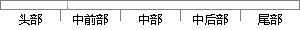

，场效应管 工作 在可变电阻区， 该 工作
片段位置图

相似结果
相似片段：
通。 由于SG3525的输出端电压可由13引脚决定，因此如果13引脚的电压由低变高，则输出端脉冲电压也会由低变高，这样整流滤波后的电压也会由低变高，场效应管在可变电阻区可工作一段时间以减小浪涌电流。为获得一个由低变高的电压，采用图4中的LM317电路，由于LM317的输出电压Vout=1.25V(1+R6/R7)，为得到一个缓慢上升的Vout，在R6
| 对比库： | WriteCheck云资源库 |
| 来源： | succeed-power.com 查看来源 |
| 发布时间： | 2013-01-24 |
| 相似率 | 100% （严重抄袭） |